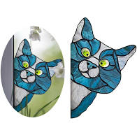
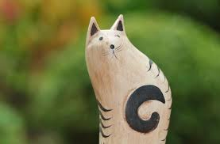
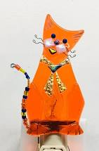
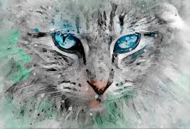
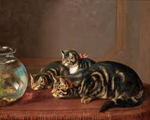

Classes! Please contact the instructor directly if you have specific questions about a class.
Stained Glass Suncatcher

- Class Description: This is a beginner stained glass class. Over three sessions, we will learn how to cut glass and basic soldering techniques.
- Instructor: PK Kreiner
- Fee: $300 (includes beginner stained glass supplies)
- Class schedule: This class is held the first three Saturdays of every month. The class meets from 12 PM until 3 PM.
Wood Carving 101

- Class Description: Our introductory woodcarving class will cover basic woodworking skills. Participants will finish the class with a cat woodcarving and a new lifelong hobby.
- Instructor: Jethro Fernandez
- Fee: $150 includes supplies. Lodging is not included.
- Class schedule: We offer this class as an option with our weekend art retreats. These retreats meet the third weekend of every month. The class starts from 6 PM to 9 PM on Friday night. The class then continues from 8 AM until 12 PM on both Saturday and Sunday.
Fused Glass Cat Nightlight

- Class Description: This class is great for the whole family including children! You will create an adorable nightlight using fused glass techniques. Final product will be available for pick up 10 days after the class.
- Instructor: Cynthia Kreiner
- Fee: $35 includes supplies.
- Class schedule: This popular class is offered every Wednesday night from 5:30 to 8:30 PM. Be sure to sign up early or get on our waitlist.
Introduction to watercolor painting

- Class Description: This six week course is for beginners in watercolor painting. Watercolor painting can seem intimidating, but our instructors will give you tricks to make is simple. At the end of the class you will have several cat watercolors.
- Instructor: Lucille Hound
- Fee: $150 includes supplies
- Class schedule: This is a six week series. It begins on the first Monday of every odd numbered month. The class time is 6 PM until 8 PM.
Intermediate oil painting

- Class Description: This class is for those who have already been introduced to the basic techniques of oil painting. We will further develop your skills in this class, including working with the oil knife. The finished product will be a beautiful cat oil painting.
- Instructor: Rae Studer
- Fee: $75 includes supplies.
- Class schedule: This is a two class series. It is offered the first and second Tuesday of every month. There are two class times available. The first is 2 PM until 4 PM. The evening class meets from 6 PM until 8 PM.
Atwood Felines Art Studio
1151 E. Lakeside Drive SW
Sherrodsville, Ohio 44675
888-555-5555
1151 E. Lakeside Drive SW
Sherrodsville, Ohio 44675
888-555-5555